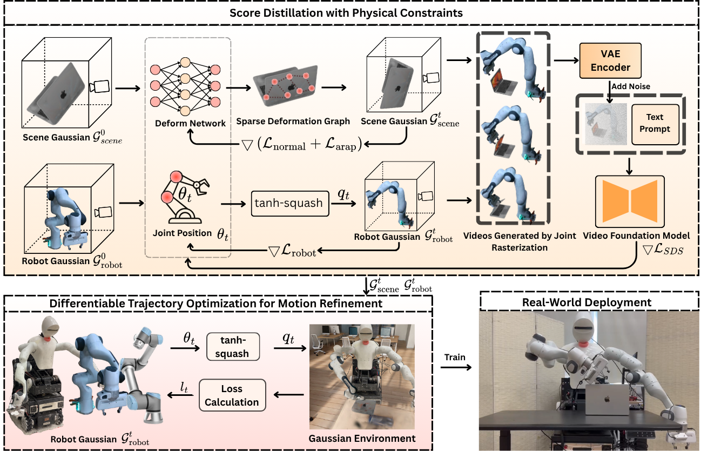

4D ROI Results
Abstract
Explicit 4D interaction data capture evolving 3D geometry and spatial relationships, supporting learning and planning for robotic manipulation. However, large-scale 4D datasets capturing coordinated robot motion and scene deformation remain scarce. We address this gap by distilling a video diffusion model into a hybrid 4D Gaussian Splatting representation. Mesh-anchored scene Gaussians capture deformation, while link-attached robot Gaussians preserve the robot's kinematic structure. Our two-stage optimization first jointly generates scene and robot motion through video score distillation with geometric and temporal regularization, then freezes the scene and refines the robot trajectory using contact objectives. Across ten manipulation tasks, our method achieves higher cross-view feature consistency and stronger semantic alignment than the evaluated 4D generation baselines, while geometric and kinematic evaluation shows reduced robot--object penetration, smaller contact timing errors, and smoother motion compared with a state-of-the-art 4D generation method. Ablation studies further demonstrate the contributions of the proposed hybrid 4D representation and trajectory refinement to preserving geometry and improving contact consistency. Human evaluations also show greater visual interaction plausibility and robot consistency than the evaluated video models. These results support the generation of structured 4D robot--object interaction data from video priors without requiring a large-scale robot-specific 4D training dataset, with demonstrated applications in downstream robot policy learning.
Generated 4D Robot-Object Interactions
4D ROI Results
Carrot grasping
4D ROI Results
Chair pushing
4D ROI Results
Laptop closing
Robot Transfer
CURI Robot Transfer
We transfer generated interactions from simulation to the real-world CURI robot.
Simulation
4D Gaussian Splatting
Real-world
Real-world CURI Execution
Method
Method Overview

Experimental Results
Experimental Results
We compare against video generation models and 4D generation baselines, and evaluate geometric and kinematic consistency.
Performance Comparisons with Video Generation Models
A banana interaction example comparing our method with video generation baselines.
Performance Comparison with 4D Generation Methods
A fixed azimuth view comparing our method with existing 4D generation baselines.
Quantitative Comparisons
| Method | CLIP Score ↑ | CLIP-I ↑ |
|---|---|---|
| InSpatio-World | 0.2793 | 0.7990 |
| SV4D | 0.2539 | 0.8630 |
| DreamGaussian4D | 0.2309 | 0.8920 |
| CHORD | 0.2907 | 0.9016 |
| Ours | 0.2984 | 0.9138 |
Comparison with 4D generation methods. Results are averaged over ten manipulation tasks, each repeated with ten random seeds. CLIP Score measures image–text alignment; CLIP-I measures feature-based cross-view consistency. Higher is better for both metrics; bold indicates the best result in each column.
| Method | Penetration (mm) ↓ |
Timing Err. (frames) ↓ |
Contact Dir. Score ↑ |
Joint Jerk (rad/s3) ↓ |
Robot-Consistent Frames (%) ↑ |
|---|---|---|---|---|---|
| w/o Refinement | 12.37 (8.96) | 3.40 (1.78) | 0.579 (0.107) | 9.87 (3.71) | 100 (0) |
| w/o Smoothness | 1.31 (1.81) | 1.10 (0.99) | 0.823 (0.136) | 19.52 (7.25) | 100 (0) |
| w/o Contact Loss | 13.10 (14.57) | 3.50 (1.51) | 0.489 (0.203) | 4.89 (2.07) | 100 (0) |
| CHORD | 18.29 (10.79) | 6.50 (4.50) | 0.391 (0.264) | 12.35 (4.21) | 32.0 (13.2) |
| Full Refinement | 1.27 (2.13) | 1.20 (1.03) | 0.858 (0.120) | 5.57 (2.55) | 100 (0) |
Geometric and kinematic evaluation across ten manipulation tasks. Results are reported as mean (standard deviation). Arrows indicate whether higher or lower is better; bold indicates the best result in each column. CHORD results include fitting the Panda URDF to its generated robot Gaussians and temporally smoothing the recovered joint trajectories. Robot-consistent frames have a fitting RMSE below 20 mm.
| Method | Sem. Align. ↑ | Geo. Plaus. ↑ | Robot Cons. ↑ | CLIP-T ↑ | CLIP Score ↑ |
|---|---|---|---|---|---|
| Wan 2.2 | 85.00% | 63.33% | 48.33% | 0.9718 | 0.2971 |
| Seedance 2.0 | 93.33% | 66.67% | 58.33% | 0.9788 | 0.3050 |
| Veo 3.1 | 86.67% | 71.67% | 28.33% | 0.9694 | 0.3069 |
| Ours | 83.33% | 81.67% | 100% | 0.9902 | 0.2984 |
Quantitative comparison with video generation models. Semantic Alignment, Perceived Geometric Plausibility, and Robot Consistency are evaluated by 26 participants across 60 task–view cases per model, using majority voting (more than half rate a case positively). CLIP-T measures temporal feature consistency; CLIP Score measures image–text alignment. Higher is better for all metrics; bold indicates the best result in each column.